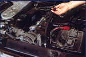
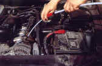
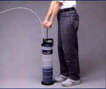
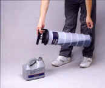
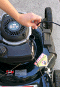
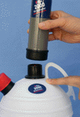
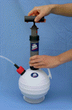
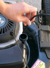
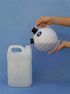

How to use
Two simple procedures depending on your model. Jump to yours:
PL-650 Big PELA & PELA Pro 14 Oil Extractors
-
Warm up the oil
Warm up the oil by running the engine. This will allow the contaminates to mix and to suspend in the oil. Remove the dipstick.
Note: If you can’t hold the dipstick comfortably in your hands, then the oil is too hot! Wait for the oil to cool off a bit.

-
Insert the extraction tube
Select and insert the appropriate diameter extraction tube into the dipstick pipe until it touches the bottom of the oil pan. Connect the main tube to the top of the unit and to the extraction tube.

-
Pump to start the vacuum
Pump the handle 4 to 15 times in a row to start the vacuum. The unit will extract the oil automatically. Continuous pumping is not required.

-
Release, empty & recycle
After all the oil has been extracted, press the release valve located at the top of the unit for 5 seconds. Remove the main tube. When pouring the oil into a container, hold the pump as in the photo and pour gently. Do not hold it upside down! Bring the used oil to a recycling depot.
Note: No special cleaning is required on the unit. Just empty as much oil as possible (do not store oil long term).

PELA 6000 & PELA 2000 Oil Extractors
-
Warm the oil & insert the tube
Warm up the oil by running the engine. This will allow the contaminates to mix and suspend in the oil. Remove the dipstick. Insert the extractor tube into the dipstick pipe until it reaches the bottom of the oil pan. Firmly place the tube cap onto the container.
Note: If the dipstick can’t be held comfortably in your hands, then the oil is too hot. Wait a bit!

-
Attach the pump
Attach the pump to the top of the container.

-
Pump to create the vacuum
Pump 10 to 20 times in a row to create the vacuum (5 to 10 times for PELA 2000). Always use 2 hands. The unit will automatically extract the old oil. Continuous pumping is not required.

-
Stop at any time
To stop extraction at any time, pull the tube out of the fluid.

-
Empty & recycle
After all the oil has been extracted, remove the tube cap from the container with a twisting motion. Remove the pump. Empty gently into a container. Bring the used oil to a recycling depot.
Note: No special cleaning is required on the unit. Just empty as much oil as possible.
